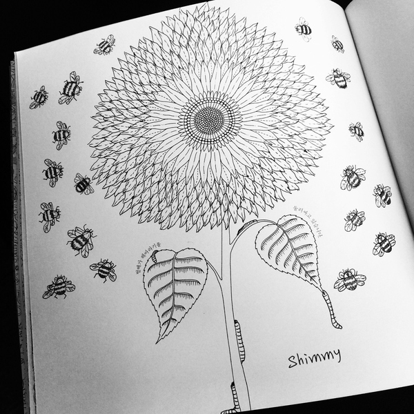

谷歌的无人驾驶车没有配备方向盘、油门、刹车、后视镜等部件，通过车联网系统，无人驾驶车可以输入甚至接收地址来接送乘客。从谷歌公布的视频看，该车是两人座纯电动车，时速最高25英里（约合40公里），外观类似迷你版的菲亚特500或奔驰Smart，车辆正中拥有一个液晶屏幕，用户通过屏幕可以完成所有指令。车辆无论在公路还是沙地上均运行得非常稳定。
...显示全部
随着智能手机的普及，所有硬件产品跟智能手机结合，通过手机的连网应用，都被打上“智能化”的标签，市场上“智能硬件”产品如雨后春笋般冒出来，各大厂商暗潮涌动，高举着“智能化产品”的旗帜，争先恐后的抢占市场，因为每一次技术的更新换代，都可能导致产业格局的再次“洗牌”。在个人/家庭消费市场，当前随着安防智能化发展趋势的影响，传统的门铃产品正经历着从最早的模拟电路到数字电路、再由数字电路到现阶段基于TCP/IP网络传输协议的可视门铃过程。现有市场上基于Wi-Fi的可视门铃是通过Wi-Fi模块连接家庭网络，带有一定网络环境限制，物联智慧提供的智能可视门铃解决方案在现有方案的基础上增加了更为便捷的远程网络连接和实时视频监控及开锁的功能，实现家庭安全的升级应用。
...显示全部
心理学家巴甫洛夫认为：暗示是人类最简单、最典型的条件反射。过去人们只重视一个人的智力因素，认为智商的高就能成功，这其实是个误区教育界. 心理学界越来越明确地意识到心理暗示的威力，个体的心理素质对其成功、成才有非常重要的影响，其影响作用甚至比智力大得多智商心理暗示
...显示全部

从生物学角度来说，克隆人具有与本体相同的染色体。然而基因的定向表达依赖于环境，同时线粒体的基因也不同。因此绝不会相同。比如同卵双胞胎就是同样原理。
此外，如果你说的相同是指本质上的完全地一样，更严格地来说，现有的技术只能证明指纹不同，而不能证明指纹相同。在某观测精度下相同的两样东西，提高精度以后不一定相同，而完全一样的概率总是无限趋近于零。
...显示全部
历代寿星中，有许多一生劳作的农民，也有诸多每日静坐的高僧。那么，长寿之道到底是在于运动还是在于静养呢？ 大象在野外生活，可活200年，而关在动物园中的大象，则活不到80年；野兔可活15年，而家兔只活4至5年。可见，野生动物经常东奔西跑，体质锻炼得好，因此活得久。如动物一样，常做适当运动的人，身体强健，生病少，寿命也长。《吕氏春秋》中说得好：“流水不腐，户枢不蠹……”法国思想家伏尔泰讲得更明确：“生命在于运动”。
...显示全部
《精益创业》应该是每个创业者或者创新者必读的书。如果用一句话来表达“精益创业”的思想，应该是“你的愿景不重要，最快速最低成本的找到市场需求最重要”。在创业故事中，我们经常读到一个光芒四射的词叫做Vision，一般翻译为“愿景”。故事中，一个Visionary的大神在若干年前发愿“我要让每个人都有一个____（个人电脑、智能手机、搜索引擎⋯⋯）”，之后经过多年艰苦卓绝的努力，他成功了，粉丝们和创业者们拜服在他脚下。愿景其实是个很可疑的东西——这个世界并非按着你、我或者任何个人的意愿而运转的。在我看来，乔布斯和小马哥当时的选择恰恰体现了创业者的自省，
...显示全部

方法一：平涂+少许渐变 .平涂，指的直接把线稿空隙填满。但是如果只是简单的每个空隙涂一个颜色，像是小朋友画沙画那样，最后的画面会有点生硬。这个时候，只需要在小部分加一点渐变，就会有不一样的效果。 比如↑这张，我画完以后，在叶片尖端叠了一层深绿色，让叶子看上去比较灵动。方法二：适当留白
...显示全部
原来的畅想今天变成了现实.一个伟大的企业家，最关键的是要会抵制诱惑，要会拒绝。马云创业的时候，募集到多家风投，但是他拒绝了，他说不要那么多钱，那时候阿里巴巴是很缺钱的，有多缺钱呢?负债。
但是他拒绝了，他为什么拒绝几百万的融资？因为他害怕融资钱太多会给企业带来不利的影响。包括他拒绝为政府打工，拒绝成为别家公司（雅虎）的高管，都可以看出，他是一个有志向，不动摇的人。
...显示全部
第一幕是龙头，但第二幕豹身欠妥，第三幕虎尾则差了一口气，大战再多30秒，还能提高足足一个档次，亦能掩盖中段的松散。
初始笑点足，是因为做在了小和尚与猴子身上，第二幕塌缩，个人感觉是山妖与八戒在分戏，观众对这两个角色的喜爱感并
不强，他们身上过多的笑点，未免有些不讨喜，若是多来些猴子与小和尚大石压腿的窘境，定好过让猪和妖怪好一阵鼻孔挖来挖去。但总得来说，瑕不掩瑜，它仍是一部扎实，认真，且在细节处有情怀的电影，齐天大圣孙悟空，腾云驾雾小白龙，参禅念经的小和尚，
...显示全部


 亚当斯对摄影界最大的贡献的确是遵循F64小组所推崇的理念，进而产生的「区域曝光法」。但不能表明他的构图就很一般了啊，忘记在哪里看到的一句话，说可能是因为安塞尔亚当斯学习过乐器的缘故，在其的照片之中我们似乎能感受到画面的节奏和律动感，我想构图也是这种律动感产生的因素之一吧。...显示全部
亚当斯对摄影界最大的贡献的确是遵循F64小组所推崇的理念，进而产生的「区域曝光法」。但不能表明他的构图就很一般了啊，忘记在哪里看到的一句话，说可能是因为安塞尔亚当斯学习过乐器的缘故，在其的照片之中我们似乎能感受到画面的节奏和律动感，我想构图也是这种律动感产生的因素之一吧。...显示全部